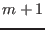
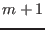
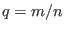
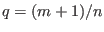
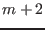
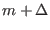
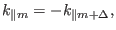

In the cylindrical geometry, continua with different poloidal mode numbers
will intersect each other, as shown in Fig. 1. Next, we calculate
the radial location of the intersecting point of two continua with poloidal
mode number  and , respectively. In the intersecting point, we have
and , respectively. In the intersecting point, we have
i.e.
which gives
or
Inspecting the expression for
 in Eq. (323), we know
that only the case in Eq. (240) is possible, which gives
in Eq. (323), we know
that only the case in Eq. (240) is possible, which gives
which further reduces to
The above equation determines the radial location where the continuum
intersect the continuum. Note that a mode with two poloidal modes has
two corresponding resonant surfaces. For the case where the mode has and
poloidal harmonics, the resonant surfaces are respectively 
and
. Note that the value of given in Eq. (242)
is between the above two values.
In toroidal geometry, the different poloidal modes are coupled, and the
continuum will ``reconnect'' to form a gap in the vicinity of the original
intersecting point, as shown in Fig. . Therefore the original intersecting
point, Eq. (242), gives the approximate location of the gap.
Furthermore, using Eq. (242), we can determine the frequency of the
intersecting point, which is given by
which can be further written
According to the same reasoning given in the above, Eq. (244) is an
approximation to the center frequency of the TAE gap. The frequency and the
location given above are also an approximation to the frequency and location
of the TAE modes that lie in the gap.
For the ellipticity-induced gap (EAE gap), which is formed due to the coupling
of and  harmonics, the location is approximately determined by
which gives
and the approximate center angular frequency is
which can be written as
Generally, for the gap formed due to the coupling of and

harmonics, we have

which gives
and
Equation (249) can also be written as
yj
2015-09-04